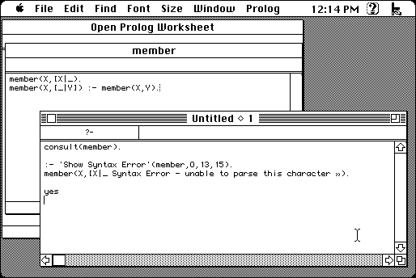

Download
OpenProlog.zip (561K) Open Prolog 1.1 repackaged into a zipped hfs disk image and checksum file. The disk image can be mounted with Mini vMac.
OpenProlog.sea.hqx (999K) Open Prolog 1.1 in the original format.
copyright: Mike Brady
mod date: Mar 24, 2003
license: postcardware
from url :
Open Prolog Home Page
An "Apple Macintosh implementation of Prolog". Requires "Mac OS 7.5.5 and later". It claims to need at least "4 Megabytes", which isn't possible on a Macintosh Plus, but it still seems to run when given less, such as 1.5 Megabytes. One problem is that it will not work if you give the program all the available remaining memory, you have to set its partition size smaller, leaving some free. (The benchmarks table lists a Macintosh Plus, which is why I thought it might work in the first place.)

If you find these downloads useful, please consider helping the Gryphel Project, which hosts them.
Here are the md5 checksums for the downloads, signed with Gryphel Key 5:
--------- GRY SIGNED TEXT --------- a35c1010e9866367d75d31d3a78b73e3 OpenProlog.zip 9d1b7fd613dcecb06584d32e17b6b163 OpenProlog.sea.hqx ------- BEGIN GRY SIGNATURE ------- Gry/4Xa8CFcUzxdN/PgHGjoQI02+5ooLTF3QP80tivcdtle+L0tC5AG0fIH4pDRB xzMQRfsor4EofnAzuvwk/TSxpkCzIhXIiJQ31/OiBaBR9V2poz7xpk7uQIIoPza3 Y4F24aJWi0tw5jagg2RsCWmJ2mobYORGWipkhB9wUlKcxJUPt6IJ50Whb3x+bZm0 -------- END GRY SIGNATURE --------